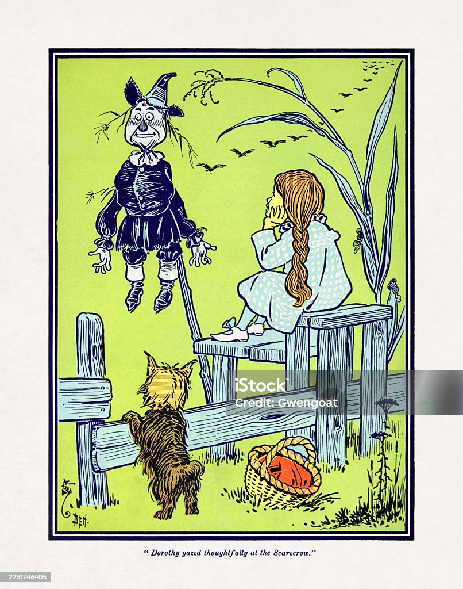

When Dorothy was left alone she began to feel hungry. So she went to the cupboard and cut herself some bread, which she spread with butter.
She gave some to Toto, and taking a pail from the shelf she carried it down to the little brook and filled it with clear, sparkling water.
Dorothy then went back to the house, and after drinking and giving Toto a drink, she set about making ready for the journey to the City of Emeralds.
There was only one other house on the road, and that was painted blue. It was here she first saw the Scarecrow, perched on a pole in the cornfield.
Dorothy looked at him in surprise, and after a time the Scarecrow winked at her and smiled in a friendly way.
Image source/license: Public Domain